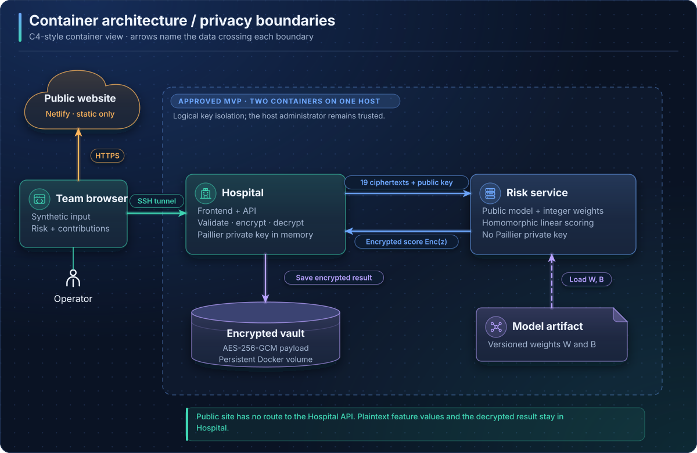
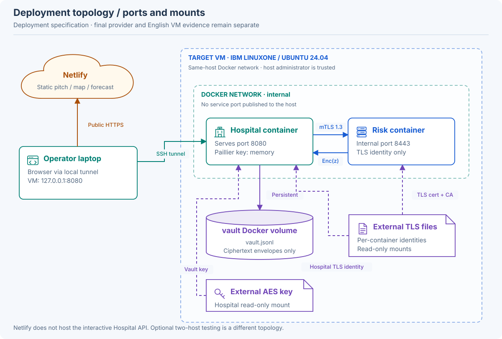
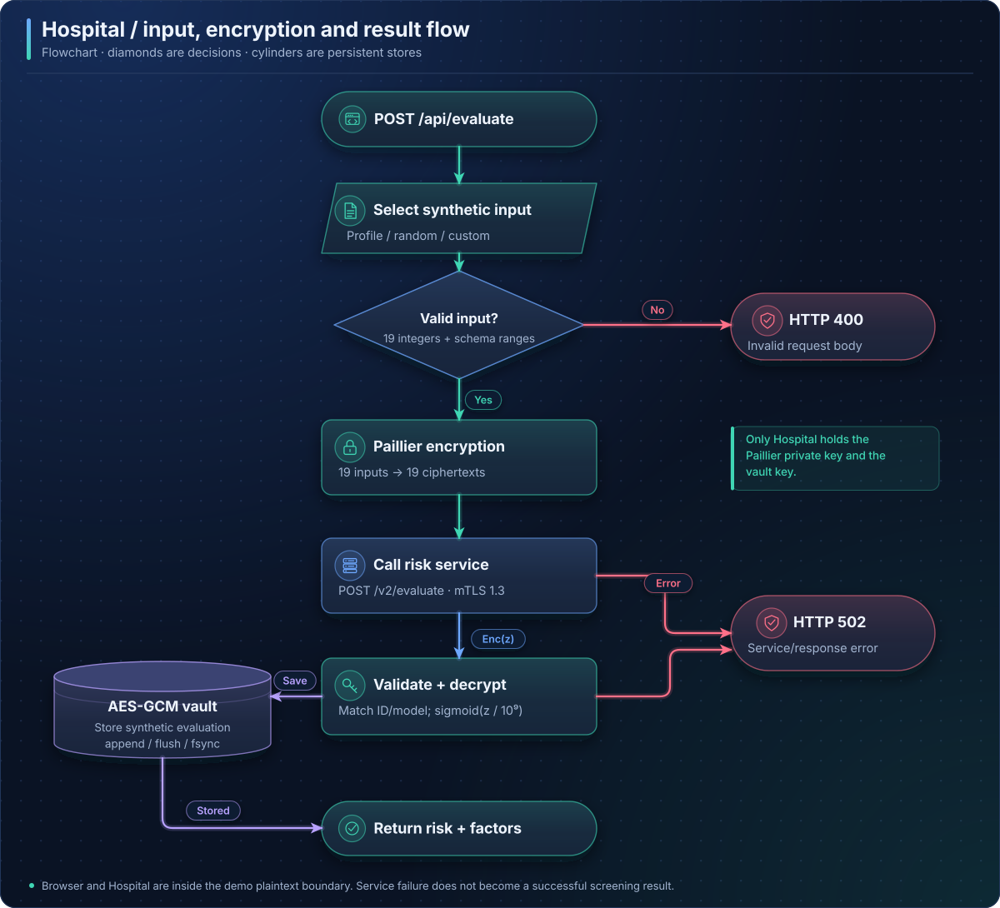
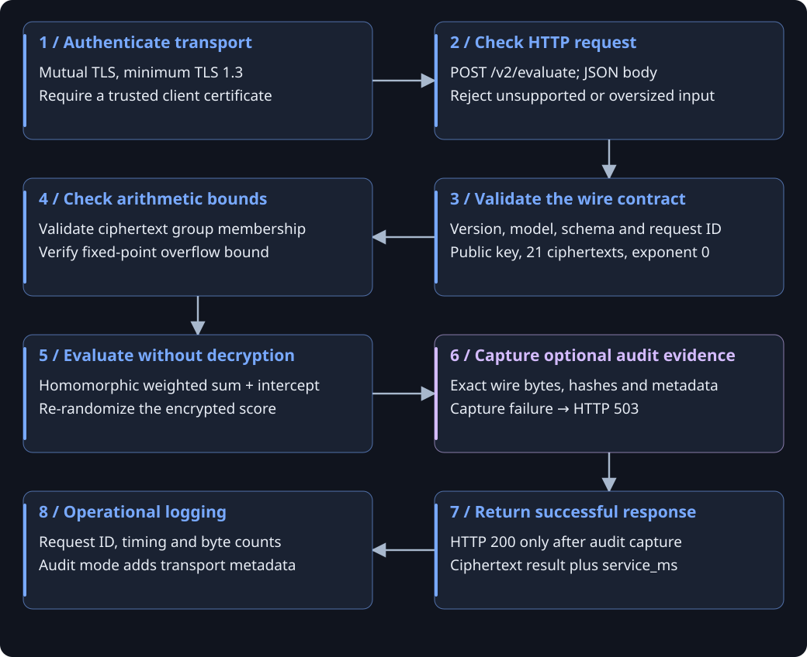
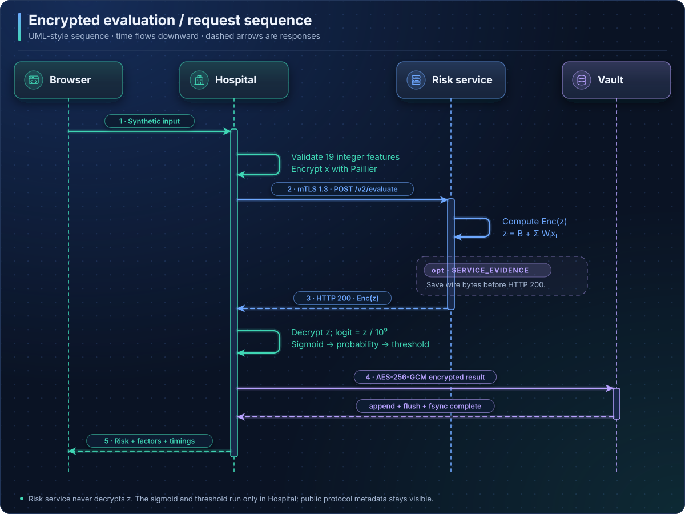
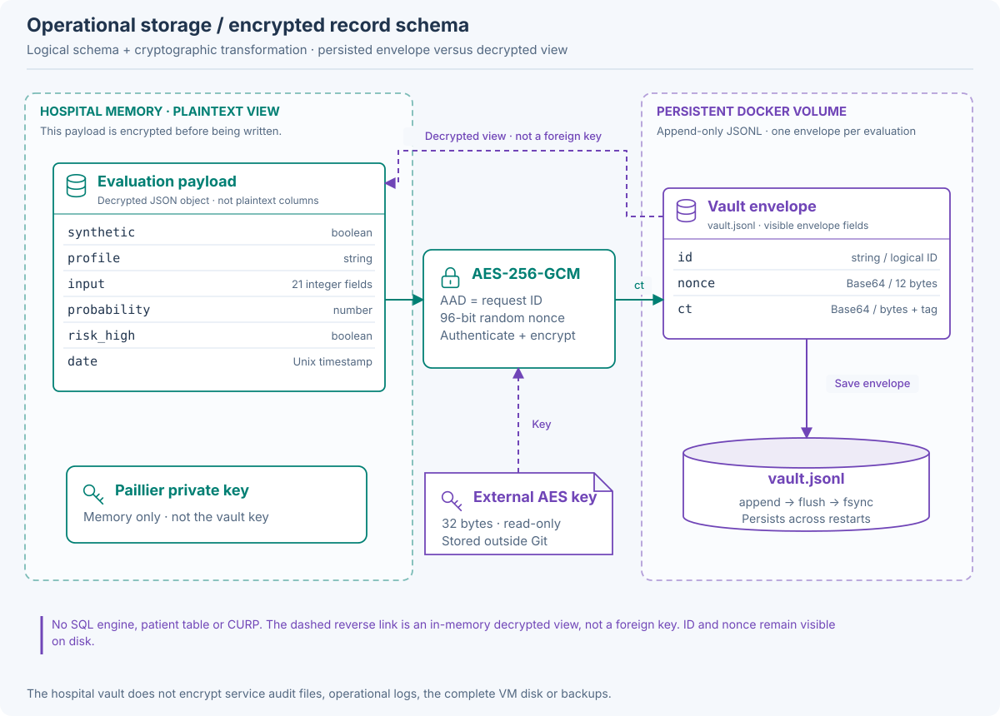
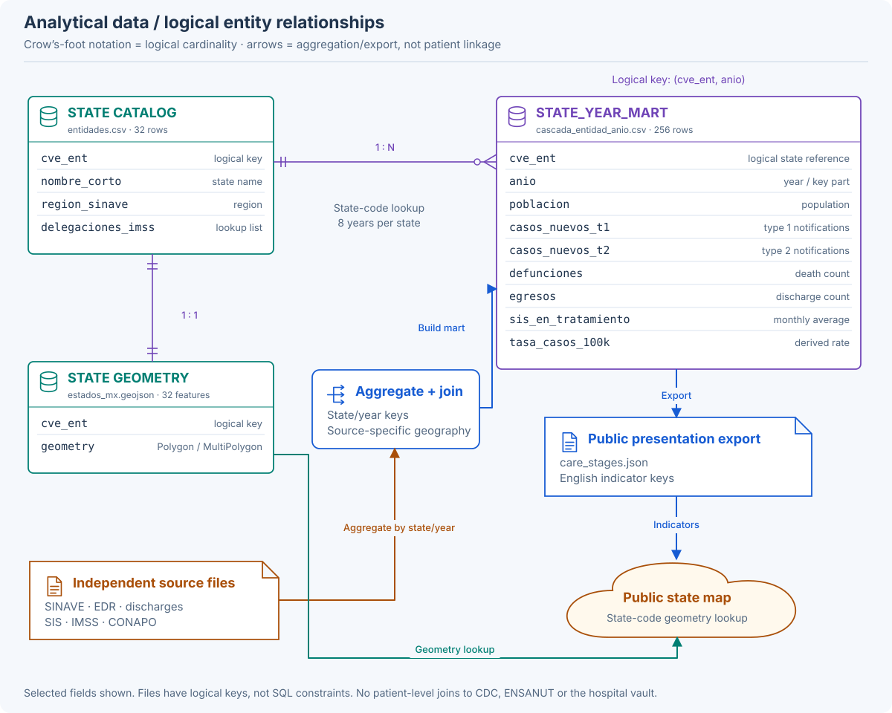
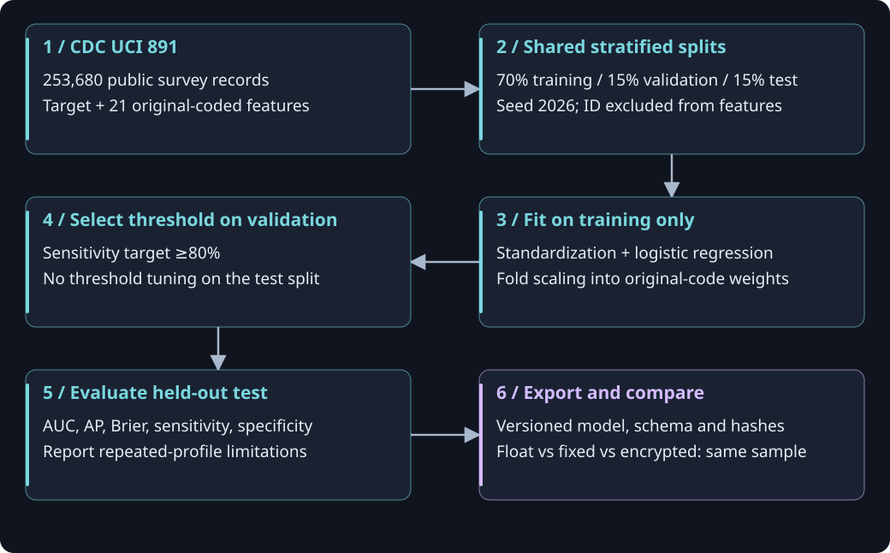
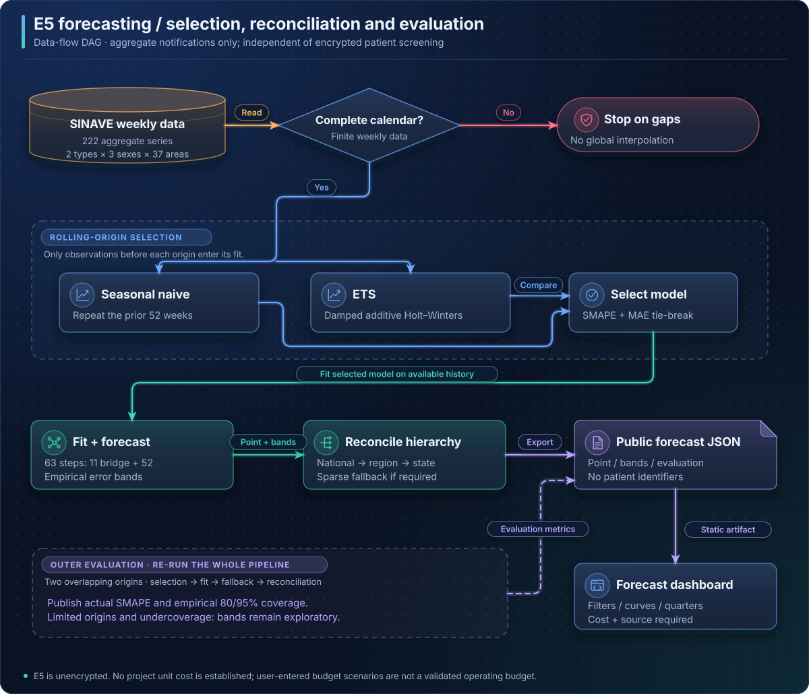
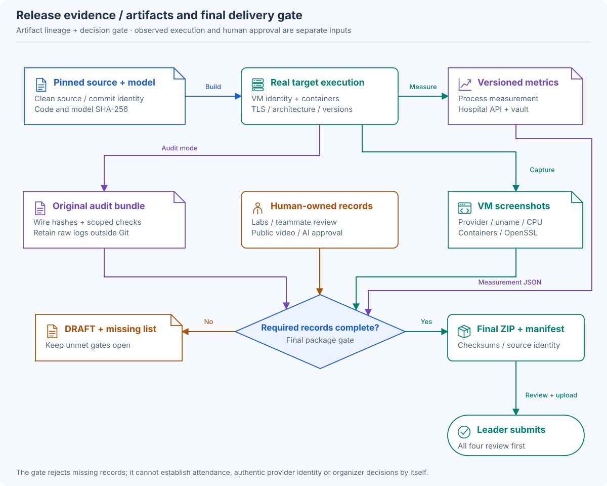

Los Antimarrulla / IBM Z Datathon 2026
One system.
Every boundary visible.
Ten implementation diagrams: the complete flow, deployment, independent components, encrypted storage and analytical data relationships.
Implementation map, not deployment certification. Based on the English runtime merged in ef1e21d. Local tests and containers are verified. Final English LinuxONE evidence, labs, human review and the narrated video remain open. Two containers on the same VM share a trusted administrator.
The complete screening flow
Synthetic feature values cross the risk-service boundary as ciphertexts; the service returns an encrypted score. Public protocol metadata remains visible.

This predicts the CDC reported prediabetes/diabetes label for screening. It does not predict future onset or mortality, and it is not a diagnosis.
Read the components and steps
- 1 / Synthetic input — 21 integer-coded indicators; Browser → Hospital API
- 2 / Validate and encrypt — Hospital validates feature ranges; Paillier public key → 21 ciphertexts
- 3 / Evaluate encrypted features — Mutual TLS 1.3 → risk service; Compute the integer linear score
- 4 / Decrypt at the hospital — Service returns one ciphertext; Private key stays in hospital memory
- 5 / Interpret the score — Scale 10^9 → sigmoid → threshold; Show probability and contributions
- 6 / Save, then return to the UI — AES-256-GCM encrypted vault record; Hospital returns the synthetic result
Implementation references · src/screening/hospital.py · src/screening/protocol.py
Where each component lives
The approved MVP uses two containers on one VM. A second host is optional; the VM administrator remains trusted.

No edge connects Netlify to the hospital. Actual final English LinuxONE execution, provider identity and measurements still require original evidence.
Read the components and steps
- Team browser — Local browser on an operator laptop; Synthetic demo only
- SSH tunnel — Laptop loopback → VM loopback; VM: 127.0.0.1:8080
- Hospital container / VM — Serves frontend + API on port 8080; Paillier private key lives in memory
- Risk-service container / same VM — Internal Docker network, port 8443; TLS identity; no Paillier private key
- Hospital vault / Docker volume — /var/lib/screening/vault.jsonl; AES key mounted from outside Git
- Netlify / separate public site — Pitch, map, forecast, plan, diagrams; No Hospital API or vault connection
Implementation references · docker/compose.yml · docs/DEPLOYMENT.md
Hospital component
The hospital owns plaintext validation, encryption, decryption, interpretation and encrypted storage. The browser is inside its trusted demo workflow.

The Hospital API is reached through SSH in the team demo. The static public site does not accept patient evaluations.
Read the components and steps
- 1 / Serve UI and metadata — GET / and /api/synthetic; GET /api/state → service health
- 2 / Receive synthetic evaluation — POST /api/evaluate; Profile, random input or custom input
- 3 / Validate original codes — Exactly 21 integers in schema order; Reject missing, extra or invalid values
- 4 / Prepare encrypted request — Generate a random 32-hex request ID; Encrypt with hospital Paillier key
- 5 / Call the risk service — Mutual TLS 1.3 and server verification; POST /v2/evaluate
- 6 / Validate and decrypt response — Match ID, model, schema and exponent; Recover exact fixed-point integer
- 7 / Interpret and store — Probability, threshold, contributions; Save encrypted synthetic evaluation
- 8 / Return the UI result — Show ciphertext samples and risk; Show component timings
Implementation references · src/screening/hospital.py · src/screening/schema.py
Risk-service component
The service holds the public model and its TLS identity. It receives encrypted input values and returns an encrypted linear score.

Encrypted values hide feature contents from the service; public keys, identifiers, message sizes, model metadata and timing remain visible. Audit checks are scoped observations, not proof against a malicious host administrator.
Read the components and steps
- 1 / Authenticate transport — Mutual TLS, minimum TLS 1.3; Require a trusted client certificate
- 2 / Check HTTP request — POST /v2/evaluate; JSON body; Reject unsupported or oversized input
- 3 / Validate the wire contract — Version, model, schema and request ID; Public key, 21 ciphertexts, exponent 0
- 4 / Check arithmetic bounds — Validate ciphertext group membership; Verify fixed-point overflow bound
- 5 / Evaluate without decryption — Homomorphic weighted sum + intercept; Re-randomize the encrypted score
- 6 / Capture optional audit evidence — Exact wire bytes, hashes and metadata; Capture failure → HTTP 503
- 7 / Return successful response — HTTP 200 only after audit capture; Ciphertext result plus service_ms
- 8 / Operational logging — Request ID, timing and byte counts; Audit mode adds transport metadata
Implementation references · src/screening/service.py · src/screening/protocol.py
Cryptography and numerical contract
Paillier protects the linear score. The sigmoid and threshold are applied only after hospital decryption.

Exact encrypted/fixed-point agreement does not imply zero floating-point quantization error. The schema-wide logit error bound is approximately 1.03 × 10^-7. CKKS and Granite are not integrated.
Read the components and steps
- 1 / Export the trained model — Fold training-only standardization; Float weights w and intercept b
- 2 / Quantize model parameters — W = round(10^9 × w); B = round(10^9 × b)
- 3 / Encrypt original inputs — 21 unscaled integer CDC codes; Paillier 2048 bits; exponent = 0
- 4 / Service computes Enc(z) — z = B + sum(W[i] × x[i]); Only additions and known scalars
- 5 / Hospital decrypts z — Exact match to fixed-point reference; Separate float quantization bound
- 6 / Hospital interprets z — logit = z / 10^9; p = sigmoid(logit); Compare p with validation threshold
Implementation references · src/screening/contract.py · src/screening/protocol.py
Operational database: the encrypted vault
The implemented operational store is an append-only JSONL file, not a relational database. Every saved evaluation has an encrypted payload.

Envelope ID and nonce are visible on disk. The vault protects its payload; it does not encrypt all VM disks, logs, audit files or backups. No patient table, CURP, SQL engine, record-editing API or key-recovery system is implemented.
Read the components and steps
- Hospital payload / in memory — synthetic, profile, input (21 fields); probability, risk_high, date
- AES-256-GCM encryption — External 32-byte vault key; Random 12-byte nonce; AAD = ID
- One persisted JSONL envelope — id: visible random request ID; nonce: Base64; ct: Base64 + GCM tag
- Hospital persistent volume — vault.jsonl → append, flush, fsync; Survives container recreation
- Authorized read in hospital — Read ID, nonce and ciphertext; Authenticate with ID and decrypt
- Secret lifecycle / separate — AES key outside Git, mounted read-only; Paillier key: memory, regenerated
Implementation references · src/screening/vault.py · src/screening/hospital.py · docker/compose.yml
Analytical database: files and logical keys
This is the implemented file-based analytical model. Relationships describe aggregation and lookup keys; no SQL foreign-key constraints or patient-level joins exist.

One state has many state/year rows. Notifications use reporting geography, deaths residence and discharges treatment geography. Matching state/year does not mean the same people progress through a cascade. CDC and the hospital vault have no patient linkage to this mart.
Read the components and steps
- State dimension / catalog — entidades.csv: cve_ent (01–32); Names, region, IMSS delegation map
- Independent source aggregates — SINAVE, deaths, discharges, SIS; IMSS screening + CONAPO population
- State/year analytical mart — cascada_entidad_anio.csv; Logical key: (cve_ent, anio), 256 rows
- Published care-stage data — care_stages.json: English view; 32 states × 2017–2024 indicators
- State geometry / map lookup — estados_mx.geojson: cve_ent; 32 polygons; state-code lookup
- Public aggregate map — Rates, counts and descriptive ratios; Different populations, no care cohort
Implementation references · docs/DATA_MODEL.md · src/data_prep/care_stage_mart.py
Screening model and experiment lifecycle
Training uses public CDC survey records. ENSANUT is a separate exploratory reduced model; it does not validate the 21-feature demo clinically.

The separate ten-feature ENSANUT experiment shows transfer limitations and underestimated risk. Synthetic demo inputs have no clinical labels; do not assign them an AUC.
Read the components and steps
- 1 / CDC UCI 891 — 253,680 public survey records; Target + 21 original-coded features
- 2 / Shared stratified splits — 70% training / 15% validation / 15% test; Seed 2026; ID excluded from features
- 3 / Fit on training only — Standardization + logistic regression; Fold scaling into original-code weights
- 4 / Select threshold on validation — Sensitivity target ≥80%; No threshold tuning on the test split
- 5 / Evaluate held-out test — AUC, AP, Brier, sensitivity, specificity; Report repeated-profile limitations
- 6 / Export and compare — Versioned model, schema and hashes; Float vs fixed vs encrypted: same sample
Implementation references · src/screening/data.py · src/screening/train.py · src/screening/ensanut.py
E5 time-series component
The optional forecast operates on aggregated notified cases. It is independent of the Paillier screening flow and uses no patient identifiers.

Demo ready; not a calibrated planning guarantee. No project unit cost is established. E5 is not encrypted; CKKS, Prophet, SARIMA and LinuxONE forecast training remain outside the delivered demo.
Read the components and steps
- 1 / Read SINAVE weekly series — 2 types × 3 sexes × 37 geographies; 222 series, observed from 2022
- 2 / Validate observations — Finite, complete weekly calendars; Current data: zero imputed gaps
- 3 / Rolling-origin model selection — Compare seasonal naive and ETS; Train using only data before each cut
- 4 / Build forecast and bands — 63 steps: 11 bridge + 52 display weeks; Empirical error bands are exploratory
- 5 / Reconcile geographic totals — National → region → state; Sparse-series fallback if required
- 6 / Outer pipeline evaluation — Two overlapping origins; limited evidence; Publish error and actual band coverage
- 7 / Export public JSON — e5_forecast_v1.json → forecast.json; Static aggregate artifact on Netlify
- 8 / Dashboard and cost scenarios — Type, geography and sex filters; Budget requires user cost + source
Implementation references · src/screening/forecast.py · site/forecast.html · docs/FORECAST.md
Evidence and release flow
Execution evidence must identify the code and environment actually measured. The public site reports status; it does not create missing VM or human evidence.

Service audit files are not the AES hospital vault and may include client IP/certificate identity. The direct two-host runner supports parallel hospital workers; it does not exercise the Hospital UI or vault. A same-host rehearsal is not proof of two-host deployment or LinuxONE.
Read the components and steps
- 1 / Agree on a clean code version — Pin commit; record code/model hashes; Build both endpoints from that version
- 2 / Execute the real environment — Process and full Hospital API metrics; Synthetic inputs for the demo
- 3 / Preserve service audit files — Optional SERVICE_EVIDENCE mode; Wire bytes + TLS/hash metadata
- 4 / Compare original run artifacts — Match request/response hashes and IDs; Check exact integers and scoped claims
- 5 / Collect human-owned records — VM/provider, labs, review, narration; Leader access and AI-use approval
- 6 / Build final delivery — Final gate rejects missing records; Team reviews; registered leader submits
Implementation references · src/screening/service.py · src/screening/two_hosts.py · src/screening/package.py